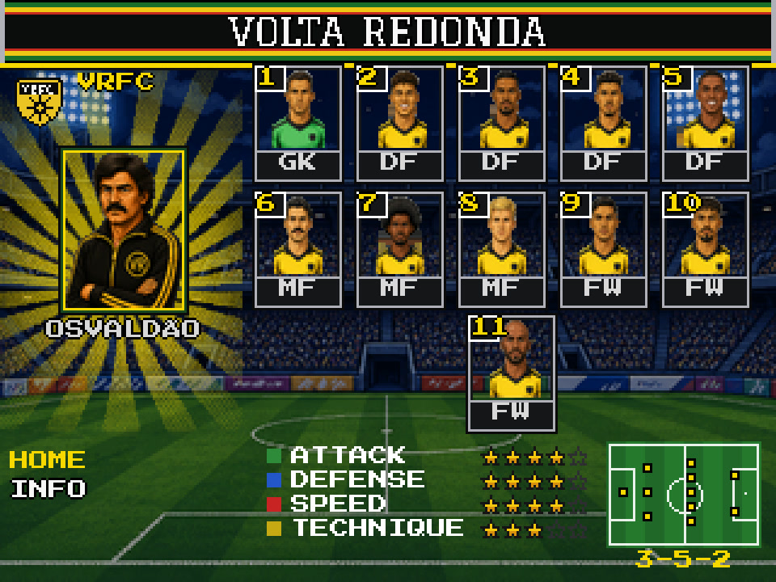
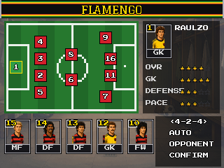

BEFORE THE WHISTLE
FROM THE MENU TO THE CENTRE CIRCLE.
The path to a match on the pitch. On every screen, the game shows the buttons for that moment at the bottom.
1 · TEAMS

←/→ change club. Confirm the home team, then the away team. ↓ goes to INFO, with the club's story.
2 · PRE-MATCH
Choose who you control (home, away or just watch), the stadium (18), the time of day (day, sunset, night) and the weather (sun or rain).
3 · LINE-UP

Confirm one player and then another to swap them, bench included. At the bottom: formation, AUTO (the game picks), OPPONENT (see the rival) and CONFIRM.
4 · OPENING

The camera tours the stand and comes down to the pitch. START skips it.
5 · COIN TOSS

←/→ pick heads or tails; confirm flips the coin.
6 · SIDE

If you won: ↑ keeps the ball; ← or → picks the end. If the rival won, you watch their choice.